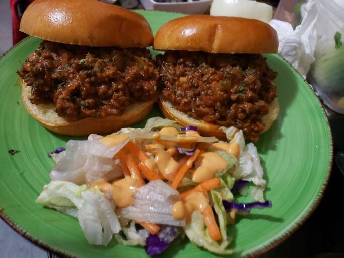

This is a recipe for the Sloppy Joes sandwich, which will take an estimated 35 minutes to make.
The recipe is enough for 6 servings of one sandwich per serving. A Sloppy Joes sandwich consists of
ground beef and onions in a tomato-based sauce on a hamburger bun.
Origin (unconfirmed): Sioux City, Iowa, 1930s.
Ingredients:
- 1 lb lean ground beef
- 1/4 cup chopped onion
- 1/4 cup chopped green bell pepper
- 3/4 cup ketchup, or to taste
- 1 tbsp brown sugar, or to taste
- 1 tsp yellow mustard, or to taste
- 1/2 tsp garlic powder
- salt and ground black pepper to taste
- 6 hamburger buns, split
Directions:
-
Heat a large skillet over medium heat. Cook and stir lean ground beef in the hot skillet
until some of the fat starts to render, 3 to 4 minutes. Add onion and bell pepper; continue
to cook until vegetables have softened and beef is cooked through, 3 to 5 more minutes.
-
Stir in ketchup, brown sugar, mustard, and garlic powder; season with salt and pepper.
Reduce heat to low and simmer for 20 to 30 minutes.
-
Divide meat mixture evenly among hamburger buns.